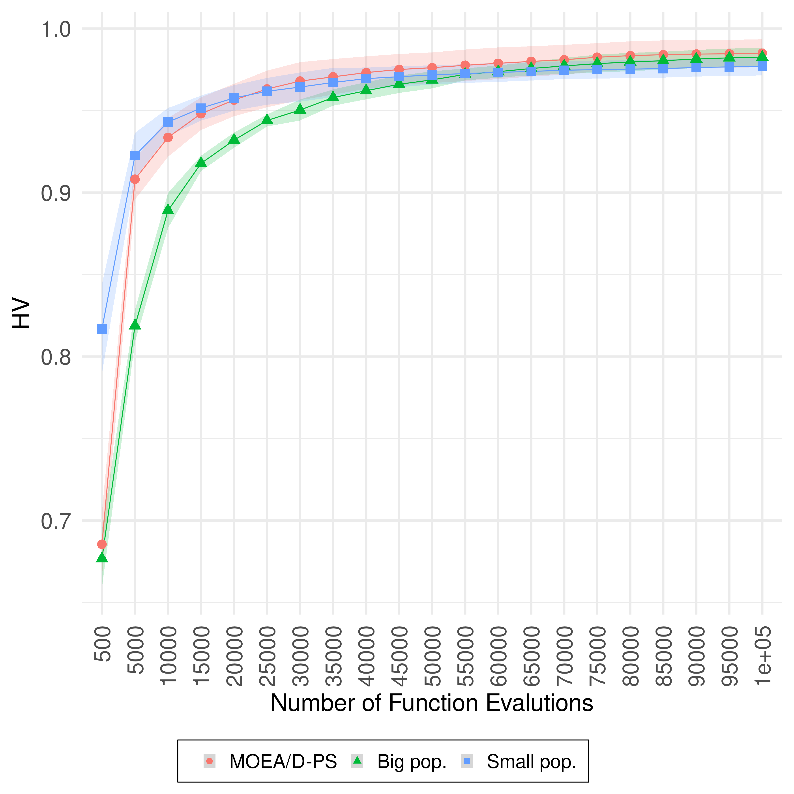
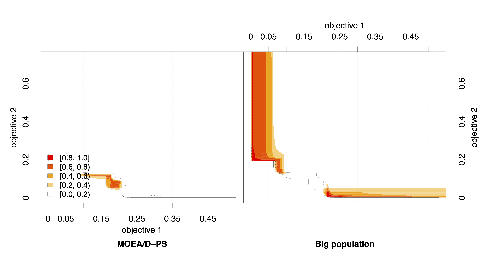
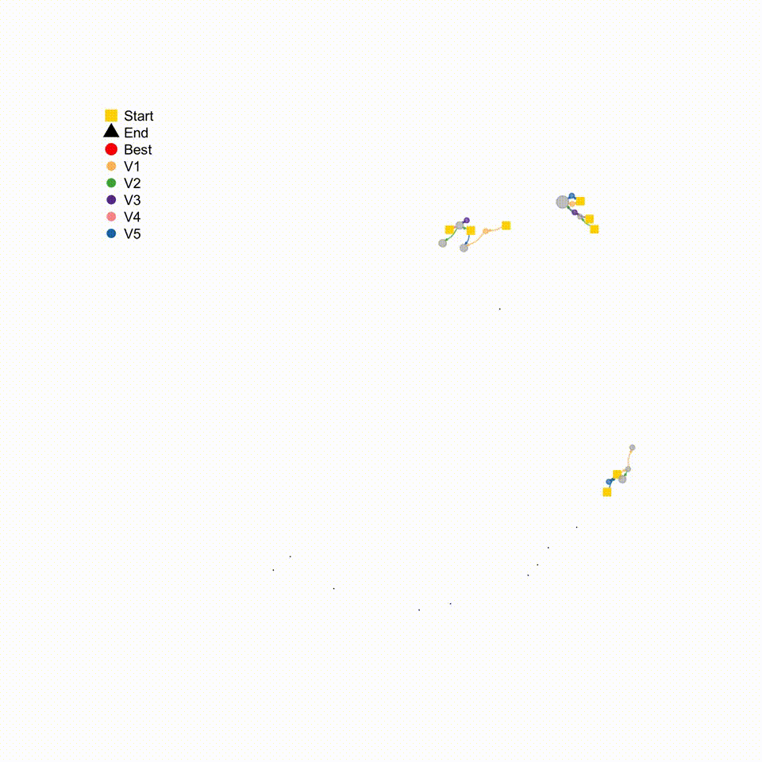
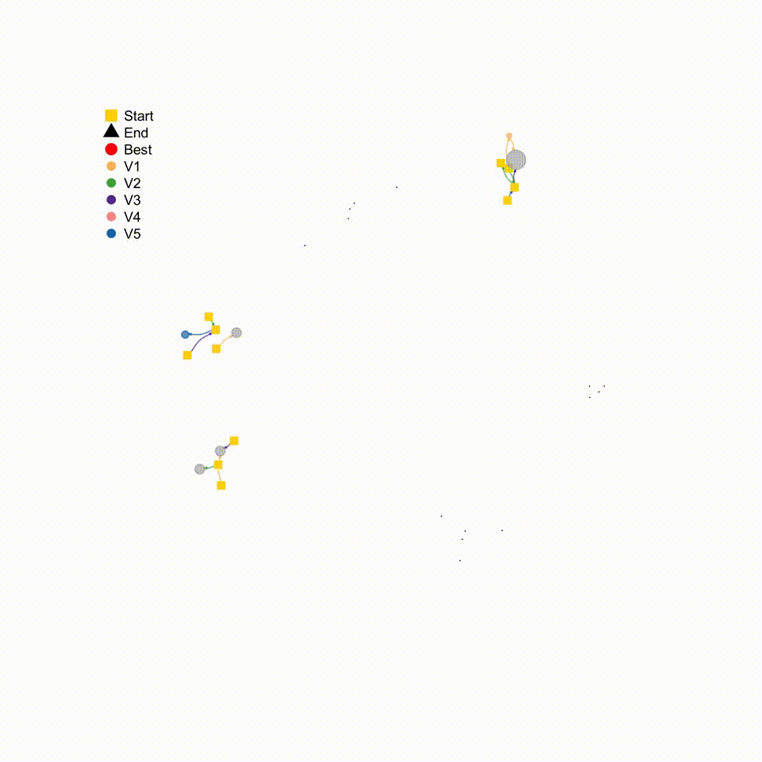

My blog
First post
Hello, all. I’m happy to introduce my research blog. This is where I will write about my research projects and other related stuff that I find interesting.
Living abroad experiences
Hi, again. This is my second post, and, wow, after a really long time. This time, I’m moving a little away from research topics and I will discuss a little my experiences while living abroad.
TODO
Visualizations
Hi, again. This is my first blog post. The idea here is to show a little of my research is a different way to the traditional papers that we read. I hope you can enjoy reading it as I did when I wrote this.
Personal motivation
Recently I started to be interested in visualising evolutionary algorithms (EAs). Here, I will summarise some fascinating works that helped me create an interest in the field of study.
What are these visualisation tools?
The main idea of visualising EAs is to show efficient ways of communicating the behaviour of such algorithms. What is remarkable about looking at the images is that we can look at them, which feels a little less abstract. I’m sure you saw some of these tools, and one of the most common is the fitness landscapes.
In a population-based algorithm:

In a gradient descent algorithm (commonly used in Neural Networks and other ML algorithms):

In case this is your first time hearing about the fitness landscape, let me give a summary of what they are:
- Fitness Landscapes are used to visualise the relationship between solutions and their fitness values.
- Similar solutions are closer to each other, different solutions are far from each other. The set of all possible solutions, their degree of similarity, and corresponding fitness values is called a fitness landscape.
- The higher the fitness, the higher is the landscape.
Are you interested? Take a look at this Wikipedia page: https://en.wikipedia.org/wiki/Evolutionary_landscape.
Or watch this YouTube video: https://www.youtube.com/watch?v=4pdiAneMMhU
From 1 to many
That’s super, isn’t it? These methods were developed for singleobjective algorithms, and we don’t have yet many tools to visualize multiobjective EAs. Having tools like this can help us to create new and (hopefully) better algorithms. That is because we can see how the process changes over time, and then we an study the strengths and weaknesses of algorithms. And by knowing these strengths and weaknesses we can improve existing algorithms or even create new and better EAs.

(Disclaimer: Is new always better? I love this meme, so I couldn’t resist adding it here, but new doesn’t mean better. Btw, what does it mean to be better?)
Methods that I think are worth mentioning
Here I will discuss visualisation methods for the multiobjective domain that I have already successfully used.
Anytime hypervolume performance
Analysing algorithms using the final approximation provides limited information related to these algorithms’ performance since these EAS should return a suitable set of solutions at any time during the search [1,2,3,4]. That is, looking at the whole process, not only at the end, provides more insightful information.

This image shows the Anytime HV (higher is better, shaded areas indicate the standard deviation) on UF10. The performance of MOEA/D-PS is shown as the red circles, MOEA/D with population size 500 is shown as the green triangles, and MOEA/D with population size equals 50 is shown as the blue squares, on UF10. The anytime performance of MOEA/D-PS is similar to the anytime performance of MOEA/D with a small population. We can see that the three variants have almost the same performance at the end of the search. This image and text are from [5].
See? The 3 algorithms have the same final performance, but how they got there was different.
Empirical Attainment Performance
The empirical attainment function (EAF) allows the examination of the solution many sets of different runs of an algorithm. It can illustrate where and by how much the outcomes of the two algorithms differ in the objective space [6]. The EAF is based on the attainment surface and resents the probability that an arbitrary objective region in the objective space is attained (dominated or equal) by an algorithm, and probability can be estimated using data collected from several independent runs such algorithm. The attained surface separates the objective space into two regions: (1) where the objective space is dominated (attained) by solutions of many sets and (2) where the objective space is not dominated by those solutions [7,8]. For example, the median attainment surface shows regions dominated by at least half of the runs [6].

The shades of red show the amount of the differences of the probabilistic distribution of the outcomes obtained by the algorithms: shades closer to red indicate higher differences between the probability distributions, shades closer to orange indicate little difference and shades closer to white indicate no difference. Again, this image and text are from [5].
See? The algorithm on the left performs better at central regions of the objective space. The algorithm on the right performs better at the side regions. So, if you prefer more balanced solutions, choose the algorithm from the left, if you prefer extreme solutions, then the one of the right is the right one.
Search Trajectory Networks
Search Trajectories Networks (STNs) of multiobjective evolutionary algorithms is a new tool that I, together with Gabriela Ochoa and Claus Aranha, have developed and just been accepted for publication at this year’s EvoStar conference.
PS: I’ve been nominated as an “Outstanding Student” for this work!
(Disclaimer: Another meme that I love and that I couldn’t resist adding here. 99!)
In our work, we extend the search trajectory networks models (STNs) proposed for single objective EAs. The main difference between STNs in the singleobjective and the multiobjective domains is that we use the idea of decomposition. The decomposition transforms a multiobjective problem into several single-objective problems. So, now we can create STNs for the multiobjective domain!
To see how effective this STN are, we generated STNs models for MOEA/D and NSGA-II. First, I’m showing the STN of the MOEA/D on the UF10 problem:

First, I’m showing the STN of the NSGA-II on the same problem:

See how different they are? For example, the first STN, of MOEA/D, is much more dense that the STN of NSGA-II. Not only that, but the MOEA/D STN showed more nodes (coloured circles) indicating that the algorithm is exploring more the search space, while the NSGA-II STN keeps going back to the end node (the size of the black triangle indicates that this node is reached multiple times).
Analysing the STNs showed us that we can effectively apply them to differentiate multiobjective EAs visually and quantitatively. This is great because we can add together this information to the traditional comparing metrics, such as HV and IGD.

Also, they are beautiful! Or is it just me?
For more information, see this Twitter thread.
https://twitter.com/yurilavinas/status/1499681390019092487
Or read the preprint version: https://t.co/1GAkPy0R9K.
Well, this is it for today. I hope you found this helpful. See you next time!
References
[1] Zilberstein, S. (1996). Using anytime algorithms in intelligent systems. AI magazine, 17(3), 73-73.
[2] Radulescu, A., López-Ibánez, M., & Stützle, T. (2013, March). Automatically improving the anytime behaviour of multiobjective evolutionary algorithms. In International Conference on Evolutionary Multi-Criterion Optimization (pp. 825-840). Springer, Berlin, Heidelberg.
[3] Dubois-Lacoste, J., López-Ibáñez, M., & Stützle, T. (2015). Anytime Pareto local search. European journal of operational research, 243(2), 369-385.
[4] Tanabe, R., Ishibuchi, H., & Oyama, A. (2017). Benchmarking multi-and many-objective evolutionary algorithms under two optimisation scenarios. IEEE Access, 5, 19597-19619.
[5] Lavinas, Y., Aranha, C., & Ladeira, M. (2022). Faster Convergence in Multiobjective Optimisation Algorithms Based on Decomposition. Evol Comput 2022; DOI: https://doi.org/10.1162/evco_a_00306.
[6] López-Ibáñez, M., Paquete, L., & Stützle, T. (2010). Exploratory analysis of stochastic local search algorithms in biobjective optimisation. In Experimental methods for the analysis of optimisation algorithms (pp. 209-222). Springer, Berlin, Heidelberg.
[7] Fonseca, C. M., & Fleming, P. J. (1996, September). On the performance assessment and comparison of stochastic multiobjective optimisers. In International Conference on Parallel Problem Solving from Nature (pp. 584-593). Springer, Berlin, Heidelberg.
[8] Fonseca, V. G. D., Fonseca, C. M., & Hall, A. O. (2001, March). Inferential performance assessment of stochastic optimisers and the attainment function. In International Conference on Evolutionary Multi-Criterion Optimization (pp. 213-225). Springer, Berlin, Heidelberg.
[9] Lavinas, Y., Aranha, C., & Ochoa, G. (2022). Search Trajectories Networks of Multiobjective Evolutionary Algorithms. arXiv preprint arXiv:2201.11726.